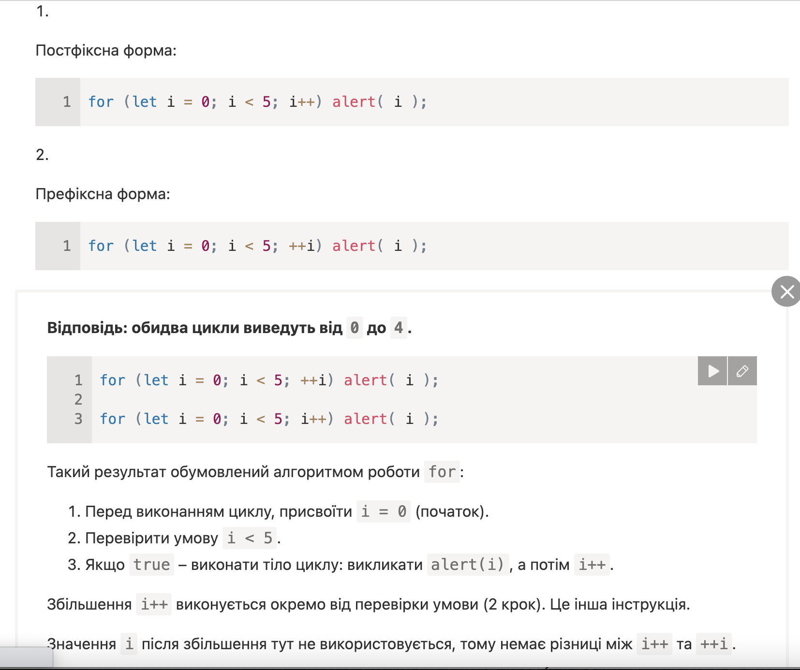
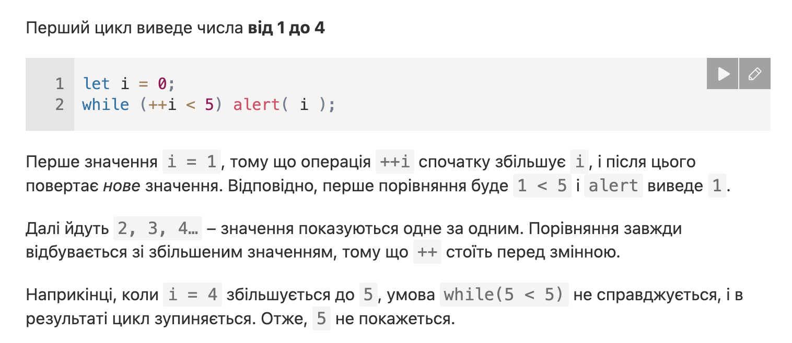
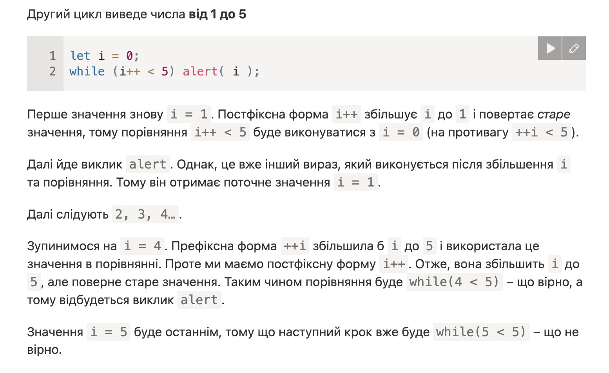

Для багаторазового повторення одного й того ж коду, використовують цикли
while (condition) { // умова, досягнувши якої цикл закінчиться: порівняння, вираз, змінна. Умова while перетвориться на логічне значення
// код або тіло циклу
// можливий крок i++, i--. Якщо без нього, то цикл буде повторюватись вічно, поки його не перерве браузер
}
do {
// тіло цикла, яке виконається спочатку, до перевірки умови
} while (condition); // умова, яка розміщається після виконання коду
let i = 0;
do {
alert( i );
i++;
} while (i < 3); // 0, 1, 2
for (початок; умова; крок) {
// ... тіло цикла ...
}
початок - виконається 1 раз при входиі в цикл
умова - перевіряється перед кожною ітерацією цикла. Якщо буде false, то цикл зупиниться
крок - виконується після тіла циклу на кожній ітерації перед перевіркою умови
тіло - буде виконуватись знову і знову, допоки умова true
Початок виконується 1 раз, потім кожна ітерація перевіряє умову, після чого виконує тіло і крок
for (let i = 0; i < 3; i++) {
alert(i);
} // виведе 0, 1, 2
Коли змінна (i - лічильника) оголошується в циклі, це називається вбудованим оголошенням змінної. Такі змінні існують лише в межах циклу
А можна використати вже існуючу змінну, просто не писати "let"
let i = 0;
for (i = 0; i < 3; i++) { // використали існуючу змінну
alert(i); // 0, 1, 2
}
alert(i); // 3, змінна доступна, бо була оголошена зовні.
Стала 3, тому що крок виконується після тіла. Тобто був алерт 2, потім крок +1
і вже тоді перевірка, яка видала false і цикл завершився.
Але крок вже відбувся, тому зовнішня змінна прийняла значення 3
Зазвичай, цикл завершується, коли умова стає false. Але ми можемо в будь-який момент вийти з циклу, використавши спеціальну директиву break.
let sum = 0;
while (true) {
let value = +prompt("Введіть число", '');
if (!value) break; // Директива break спрацьовує тоді, коли користувач вводить порожній рядок або скасовує введення. Ця директива негайно завершує виконання циклу і передає контроль наступному рядку за циклом, тобто на alert.
sum += value;
}
alert( 'Сума: ' + sum );
Директива continue — це “полегшена версія” break. Вона не зупиняє весь цикл. Натомість, вона зупиняє поточну ітерацію і починає виконання циклу спочатку з наступної ітерації (якщо умова циклу досі вірна). Її зручно використовувати коли закінчили з поточною ітерацією і хочемо продовжити з наступної.
for (let i = 0; i < 10; i++) {
if (i % 2 == 0) continue; // якщо умова справджується, тоді пропускаємо решту тіла циклу і починаємо з наступної ітерації
alert(i); // 1, потім 3, 5, 7, 9, тобто непарні числа з циклу
}
це те ж саме, що й:
for (let i = 0; i < 10; i++) {
if (i % 2) {
alert( i );
}
}
break/continue можна використати з if/else, але не можна з тренарним оператором ?
Деколи нам потрібно вийти з кількох вкладених циклів. Звичайний break у внутрішньому циклі, перерве лише внутрішній цикл. Якщо цього недостатньо, і потрібно вийти з усіх циклів при досягненні якоїсь умови, то можна створити мітку біля того циклу з якого треба вийти і використати цю мітку після break/continue в тому місці, де виконається умова
outer: for (let i = 0; i < 3; i++) { // outer: - мітка, можна іншу ім'я
for (let j = 0; j < 3; j++) {
let input = prompt(`Значення в координатах (${i},${j})`, '');
// якщо порожній рядок або Скасувати, тоді вихід з обох циклів
if (!input) break outer; // виконання коду перейде з цього місця переривання циклу до функції alert('Готово!').
// зробити щось із значенням...
}
}
alert('Готово!');
кілька цікавих прикладів
  Замініть цикл for на while так, щоб поведінка не змінилася (щоб вивід залишився той самий).
for (let i = 0; i < 3; i++) {
alert( `число ${i}!` );
}
Напишіть цикл, який пропонує prompt ввести число більше за 100. Якщо відвідувач введе інше число – попросити ввести ще раз, і так далі.
Цикл повинен запитувати число доти, доки відвідувач не введе число, більше за 100, або не скасує ввід/введе порожній рядок.
Ми припускаємо, що відвідувач вводитиме лише числа. В цьому завданні не обов’язково реалізовувати оброблення не-числового введення.
Напишить код, який виводить вст прості числа з інтервалу від 2 до n (Натуральне число, больше 1 - просте, якщо воно ні на що не ділиться, крім себе и 1.)